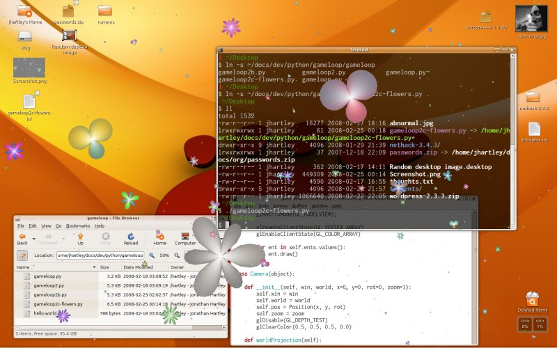
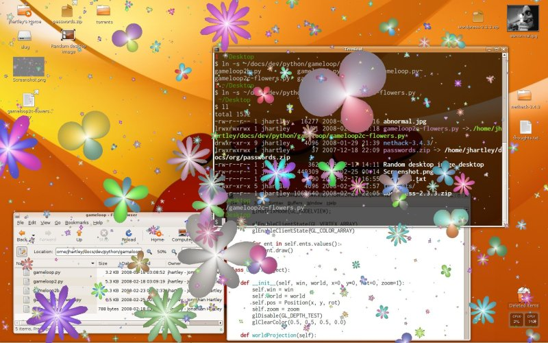
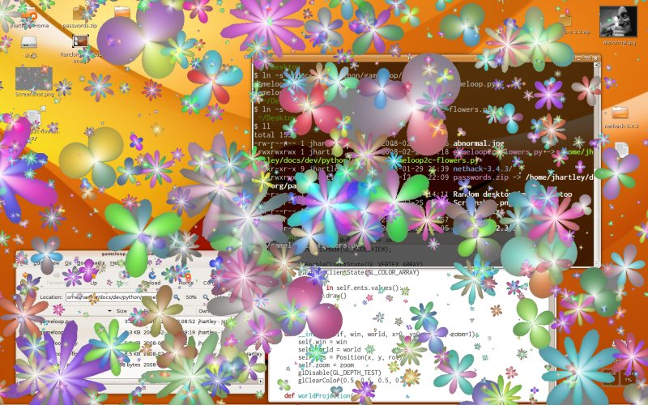
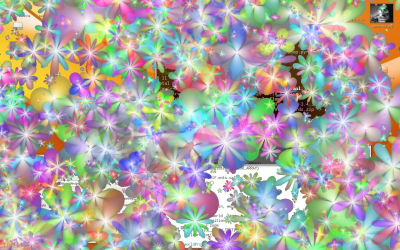

pyglet week 3 : Some Pretty Flowers
This is just a refinement of last week's script. No massively significant changes, just a bunch of minor tweaks.
- The fans are replaced with slightly prettier flowers, with separate vertex and color arrays for each one.
- Running with the python -O flag means we can render 800 flowers at 30fps, no problem.
- The camera can now be moved and rotated and zoomed. I just use this to subtly zoom in after the screen has filled with flowers
- I discovered that if I fail to clear the screen before rendering, then I inherit the appearance of the desktop as a backdrop. No doubt this cannot be relied upon, and presumably doesn't happen on some other graphics hardware or operating systems, so YMMV (Update: yep - it looks CRAZY on Windows unless you uncomment the glClear() call). I won't be relying on this trick in future, but for now, on my machine at least, it looks like this:



